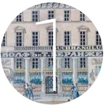
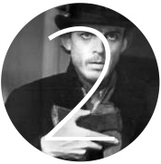
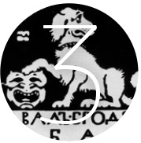
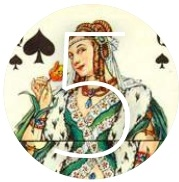

В начале XIX века в доме 18 на Невском проспекте открылась кондитерская швейцарцев Вольфа и Беранже. В день дуэли 27 января (8 февраля) 1837 года здесь встретились Пушкин и его секундант Константин Данзас. От исторической кондитерской сохранилась только изящная вывеска «Вольф и Беранже», а ее традиции продолжает ресторан «Литературное кафе».Дом, в котором герой «Преступления и наказания» Родион Раскольников снимал каморку под самой кровлей, стоит на пересечении бывшей Средней Мещанской (Гражданской) улицы и Столярного переулка. Современный адрес — Граж данская улица, д. 19/15. Точно, как в романе, тринадцать ступеней ведут наверх с площадки последнего этажа.Название для арткафе «Бродячая собака», открытого в 1911 году, придумал Алексей Толстой. Художник Мстислав Добужинский нарисовал герб: добродушного пса, положившего лапу на театральную маску. Памятник Серебряного века, «Бродячая собака» принимает гостей на историческом месте — по адресу улица Итальянская, д. 4.Вертикальная улица Джона Леннона, уходящая в небо — такое возможно только в арт-центре «Пушкинская, 10». Площадка, ориентированная на некоммерческое современное искусство, ведет свою историю с 1989 года, когда в расселенном под капитальный ремонт доме на Пушкинской обосновались художники, музыканты и прочие богемные персонажи.В повести Пушкина «Пиковая дама» Германн подходит к дому «в одной из главных улиц Петербурга», где жила графиня. Прототипом для образа графини послужила княгиня Наталья Голицина, фрейлина при дворе пяти русских самодержцев. Она жила в трехэтажном доме № 10 по Малой Морской улице, который в основном сохранил свой внешний вид.